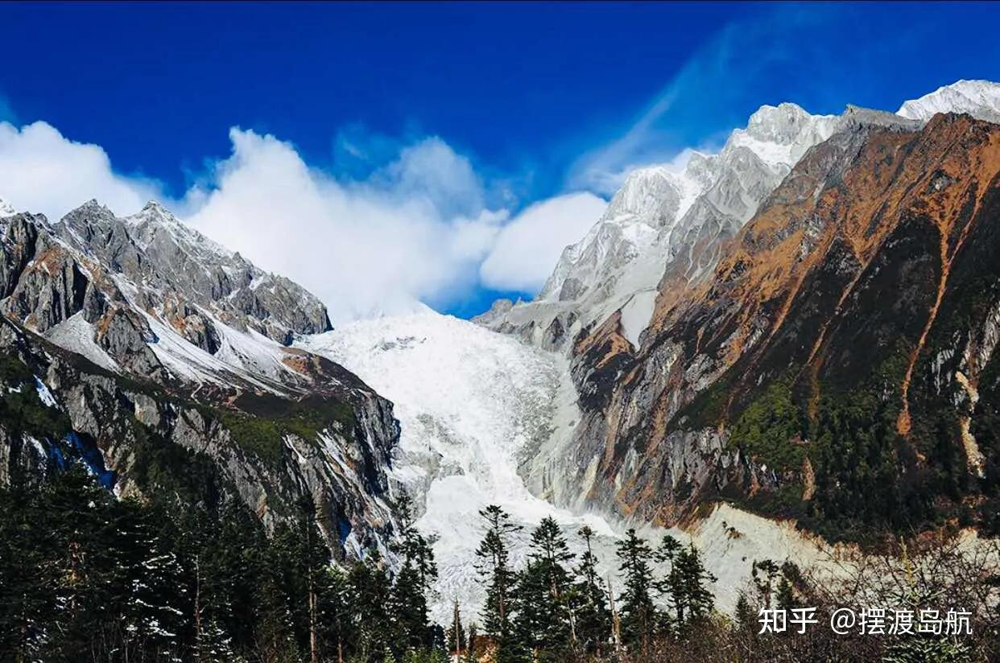
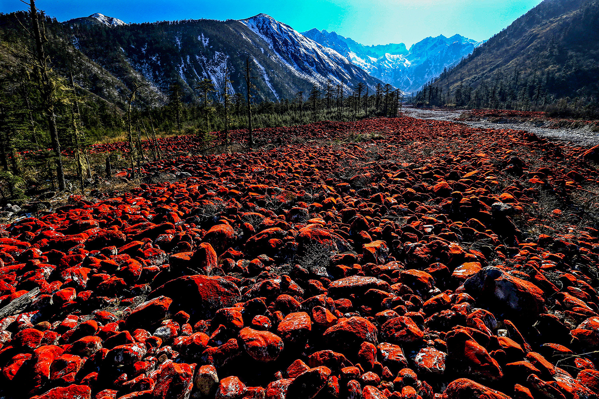

四号营地 · 冰川极景
四号营地大冰瀑布与贡嘎群峰
乘索道登上四号营地（3600m），眼前豁然出现高达 1080 米、宽达 1100 米的万丈大冰瀑布，规模是黄果树瀑布的 15 倍以上！巨大的冰裂缝与冰川舌在贡嘎雪峰掩映下银光闪耀。
📸 拍摄要点： 晴天上午顺光拍摄大冰瀑布全景；带上长焦镜头特写冰瀑顶端的冰塔林与透亮幽蓝的冰裂隙。

| 项目 | 收费标准 | 性质 | 决策建议 |
|---|---|---|---|
| 景区大门票 | ¥90 /人 | 必须购买 | 磨西大门检票入园。 |
| 景区大巴观光车 | ¥70 /人 (往返) | 必须购买 | 从磨西大门穿行原始森林至三号营地干河坝（单程约 45 分钟）。 |
| 大冰瀑布索道 | 往返 ¥135 /人 | 强烈建议买 | 三号营地至四号营地（跨越冰川）。不坐索道无法俯瞰世界级大冰瀑布全貌！ |
| 贡嘎神汤/二号营地温泉 | ¥120~188 /人 | 自选休闲 | 露天纯天然雪山森林温泉，洗去自驾疲劳。 |
乘索道登上四号营地（3600m），眼前豁然出现高达 1080 米、宽达 1100 米的万丈大冰瀑布，规模是黄果树瀑布的 15 倍以上！巨大的冰裂缝与冰川舌在贡嘎雪峰掩映下银光闪耀。

二号营地 · 冰火之境露天温泉池依山势坐落在茂密的古老冷杉林中。深秋与初冬时分，池外白雪皑皑、霜花挂枝，池内热气氤氲。一边浸泡在 40℃ 的地热温泉中，一边仰望森林树冠外的雪白峰巅。